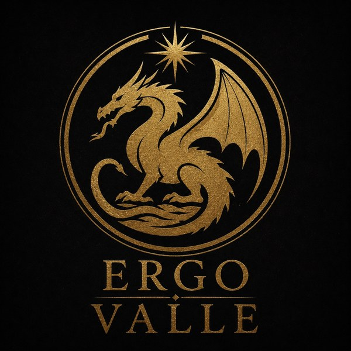
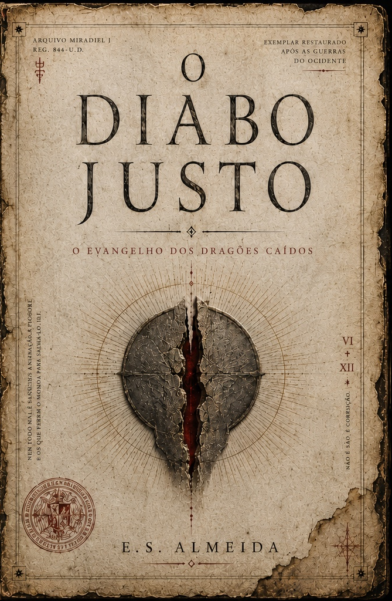
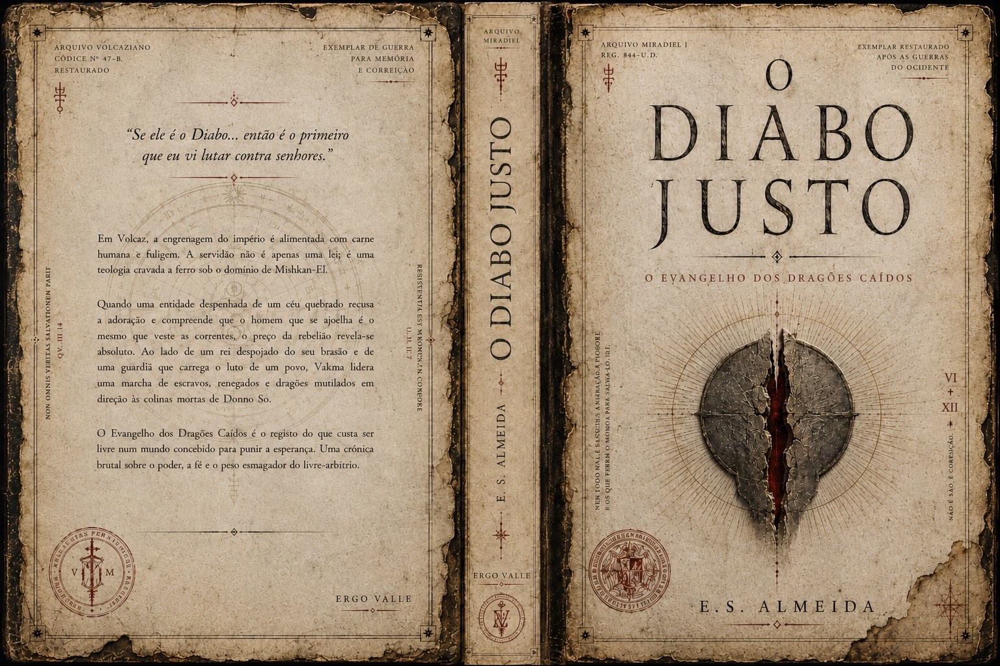
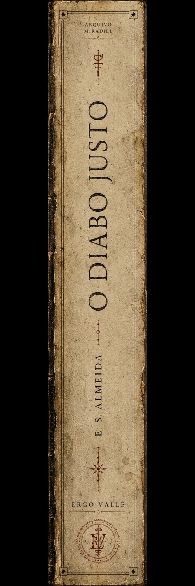

Disponível agora
eBook Kindle
A edição digital de O Diabo Justo, de E. S. Almeida, já está disponível para leitura no Kindle. É a porta de entrada para a saga O Evangelho dos Dragões Caídos.
Comprar na Amazon
Ergo Valle Editora IndependenteLivro de abertura da saga O Evangelho dos Dragões Caídos
Uma fantasia sombria sobre fé, queda, poder e a terrível pergunta que atravessa todos os impérios: quem ainda pode ser chamado de justo quando o mundo inteiro aprendeu a ajoelhar?
Livro em destaque
Livro Primeiro da saga O Evangelho dos Dragões Caídos
A edição digital de O Diabo Justo, de E. S. Almeida, já está disponível para leitura no Kindle. É a porta de entrada para a saga O Evangelho dos Dragões Caídos.
Comprar na Amazon
A edição impressa ainda não está disponível. A versão física será anunciada em breve pela Ergo Valle Editora.
Prévia editorial
Enquanto a versão impressa não chega, esta prévia apresenta a identidade visual completa de O Diabo Justo: capa, contracapa e lombada.


Sinopse completa
O Diabo Justo acompanha a abertura de um mundo marcado por impérios, ruínas sagradas, guerras antigas e verdades enterradas sob a autoridade dos vencedores. Em Volcaz, onde a fé se mistura ao poder e os nomes dos deuses sustentam a ordem dos homens, a justiça deixou de ser uma virtude: tornou-se instrumento de domínio, medo e obediência.
No centro dessa queda, surge uma presença impossível de classificar. Não um salvador puro. Não um monstro simples. Mas uma força ferida, lúcida e perigosa, que carrega em si a contradição de todo julgamento: a possibilidade de fazer o mal em nome de uma justiça maior — e de enfrentar o bem quando ele se tornou apenas máscara de tirania.
Entre reis depostos, guardiões, entidades caídas, dragões esquecidos e doutrinas erguidas sobre sangue, O Diabo Justo conduz o leitor por uma fantasia sombria de tom bíblico, filosófico e épico. A narrativa atravessa fé, culpa, poder, vingança, redenção e liberdade, perguntando até onde alguém pode ir para romper uma ordem injusta sem se tornar aquilo que jurou destruir.
Este é o primeiro livro da saga O Evangelho dos Dragões Caídos: uma jornada sobre queda e revelação, sobre deuses que mentem, homens que obedecem e criaturas antigas que ainda carregam nas escamas a memória de uma guerra que nunca terminou.
Por que ler O Diabo Justo?
O livro mistura épico, mito, dor e linguagem poética, sem abrir mão de tensão narrativa e atmosfera cinematográfica.
O Diabo Justo apresenta o universo de O Evangelho dos Dragões Caídos, onde religião, império e memória disputam a verdade.
A obra não separa facilmente santos e monstros. Cada escolha cobra um preço, e cada ato de justiça pode carregar uma sombra.
Publicado pela Ergo Valle, o livro nasce de uma visão independente: uma mitologia própria, intensa, filosófica e em expansão.
Catálogo Ergo Valle
Alguns títulos aparecem apenas como anúncio de preparação, sem sinopse pública e sem data definida.
Livro Primeiro da saga O Evangelho dos Dragões Caídos.
Comprar KindleTítulo em desenvolvimento. Mais informações serão divulgadas futuramente.
Acompanhar novidadesSaga literária iniciada por O Diabo Justo. Novos volumes serão anunciados pela Ergo Valle.
Receber atualizaçõesSobre a editora
A Ergo Valle é uma editora independente criada para publicar obras de fantasia sombria, literatura filosófica, ficção espiritual e narrativas autorais que unem mito, linguagem poética e conflito humano.
O selo nasce do desejo de transformar livros em experiências: texto, imagem, som, presença digital e memória. Cada obra publicada pela Ergo Valle deve carregar uma identidade própria — elegante, profunda e reconhecível.
Contato
Para acompanhar lançamentos, parcerias, leitura crítica, direitos, imprensa ou futuras edições físicas.